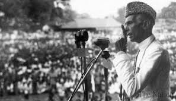
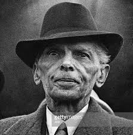
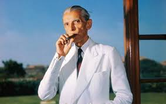
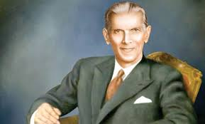

Quaid-e-Azam




One of the Greatest Leaders of All Times
Mohammed Ali Jinnah aka Quaid-e-Azam was a lawyer but moved into politics to work for the walfare of Sub-Continent Muslims.He rose to the ranks of leader of All India Muslim League and managed to grant them a peaceful country of their own
Learn more about Quaid-e-Azam.